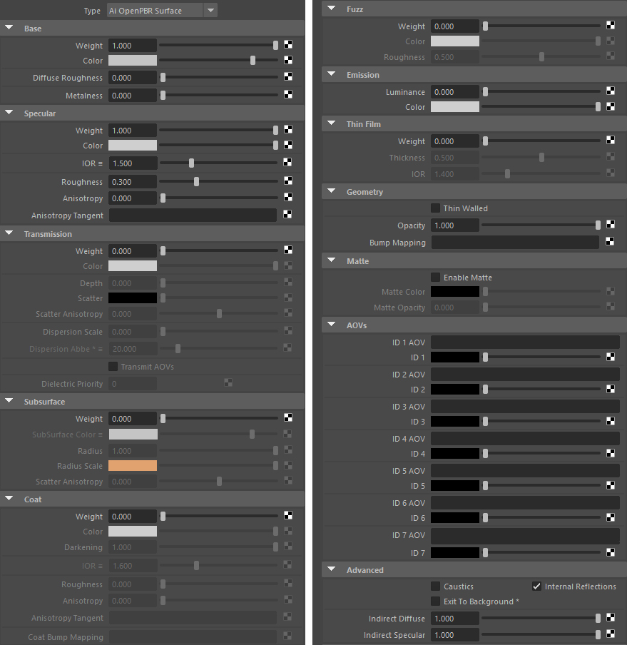
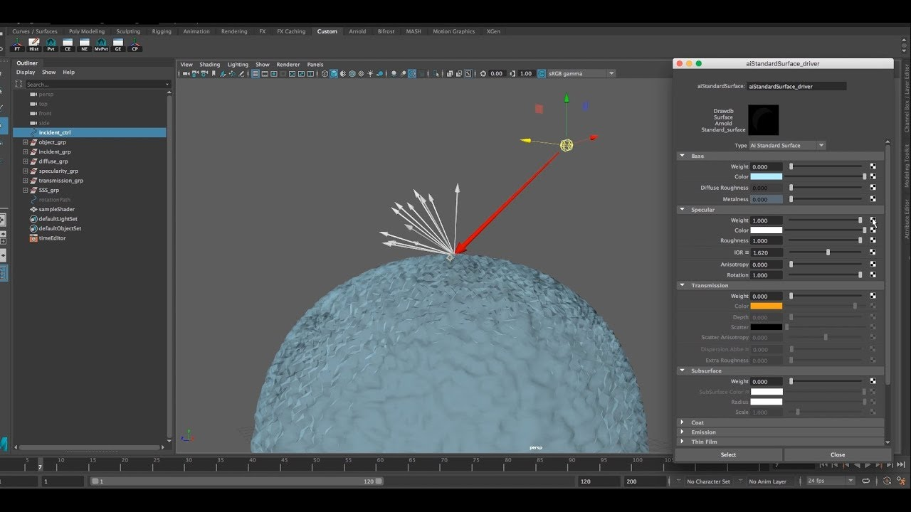
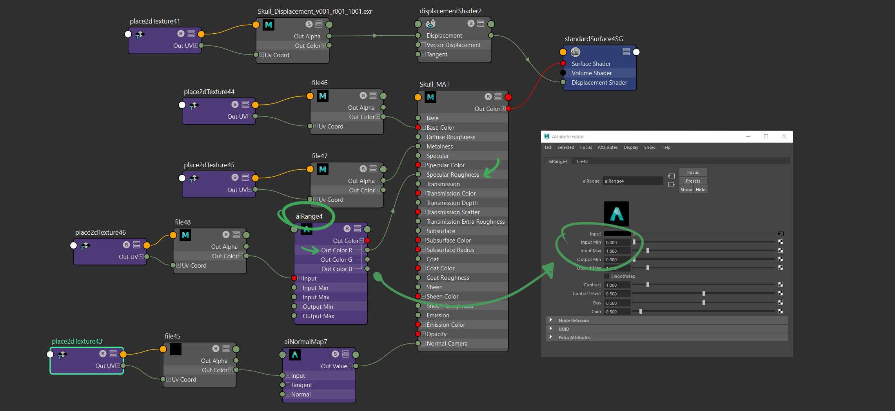
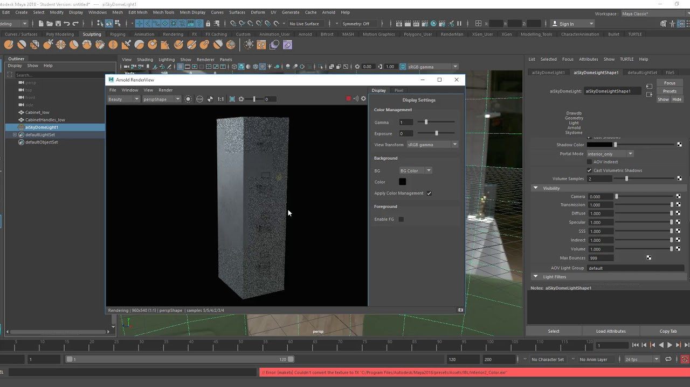
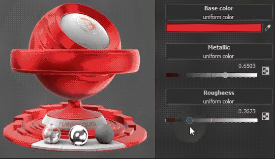

PBR 원리와 특성
Physically Based Rendering(PBR)은 실제 세계의 물리적 빛 상호작용을 시뮬레이션하여 사실적인 재질과 조명을 구현하는 렌더링 기법입니다.
에너지 보존 법칙, 미세면 이론, 프레넬 효과 등 물리 기반 알고리즘을 활용하여 모든 시점과 조명 조건에서 일관된 재질 표현이 가능합니다.
Metalness 워크플로우
금속/비금속 구분을 통한 재질 표현 방식, 다양한 게임 엔진과 호환성 우수
Roughness 제어
표면 거칠기 정도로 반사의 선명도와 확산 정도를 제어
aiStandardSurface
Arnold의 올인원 쉐이더로 다양한 PBR 재질 구현 가능
에너지 보존
물리 법칙에 따라 표면에서 반사되는 빛의 총량은 입사광을 초과하지 않음
PBR 셋업 및 예시





PBR 재질 실습 가이드
1
MayaArnold aiStandardSurface 쉐이더 생성
2
Base Color에 Albedo/Diffuse 맵 연결
3
Metalness 값 설정 (금속 1.0, 비금속 0.0)
4
Roughness 맵으로 표면 거칠기 제어
5
Normal 맵으로 표면 디테일 강화
6
OpenPBR 표준 워크플로우로 여러 엔진 호환성 확보